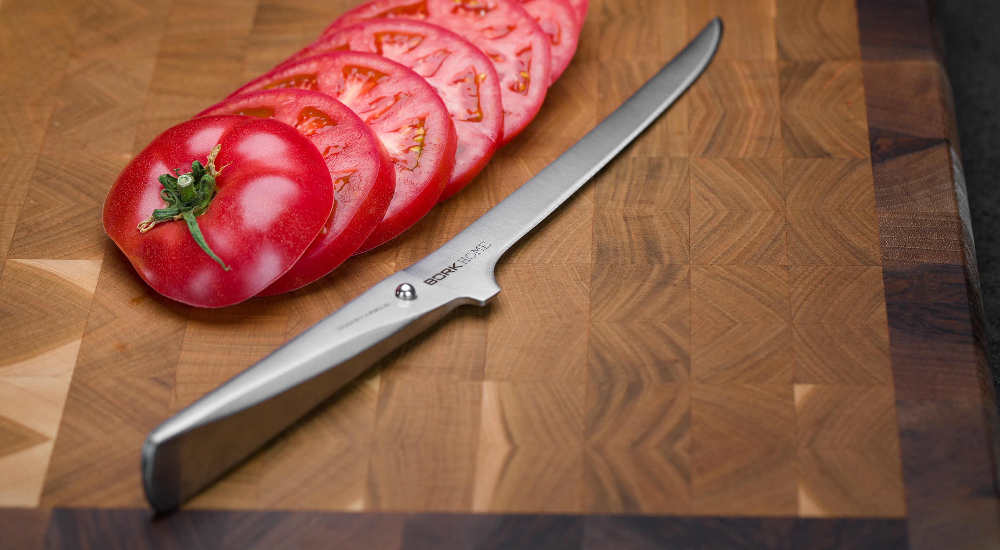
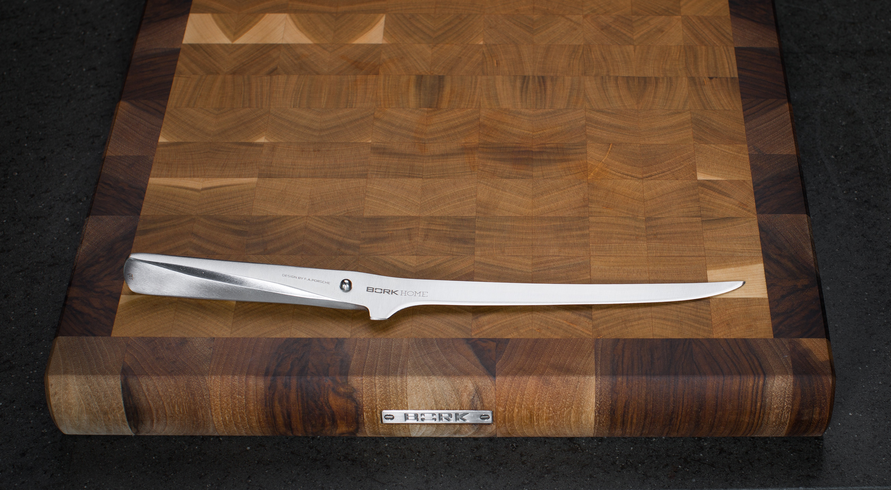
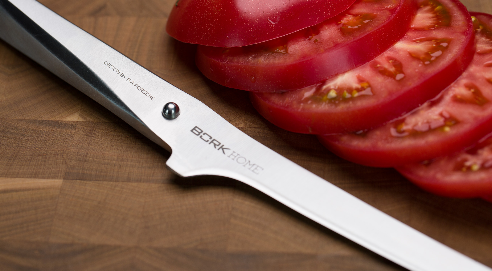

Филейный нож BORK HN504
Филейный нож – самый узкий и длинный, он используются для филетирования рыбы, мяса или птицы.
Разрез будет равномерным и аккуратным, если его производить одним движением ножа, а это возможно, только если лезвие ножа длинное. Благодаря гибкости лезвия можно снять тонкую кожу, отделить филе рыбы от костей. разделки сырой рыбы. Он имеет длинное лезвие с нешироким полотном и ровной, без зубчиков, режущей кромкой. Длинное лезвие нужно для получения ровного, аккуратного разреза, который совершают одним движением ножа.
Филейный нож также может использоваться при приготовлении суши.
Филейный нож 17 см. создан без единого шва для гарантии гигиеничного и максимально комфортного использования.
Благодаря специальному способу затачивания изделие дольше остается острым.
Филейный нож BORK HN504 полностью изготовлен из японской высококачественной нержавеющей стали AISI 301.
Дизайн ножа выполнен студией Porsche Design
Серия ножей была разработана вместе с топ-шеф- поварами из разных стран. Дизайн ножа основан на методах работы профессиональных поваров, которые часто используют свои ножи под разными углами резки.
Ручка и лезвие полностью сливаются друг с другом, образуя единое целое. Только шарик из нержавеющей стали сигнализирует о разделении, а также является упором для указательного и большого пальцев.
Необычный дизайн в сочетании с продуманной эргономикой делает ножи BORK уникальным дополнением вашей кухни и признанным инструментом более чем 200 шеф-поваров Германии.